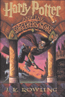
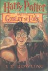
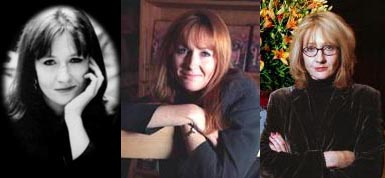

| LevSelector.com |
|  | For twelve long years, the dread fortress of Azkaban held an infamous prisoner named Sirius Black. Convicted of killing thirteen people with a single curse, he was said to be the heir apparent to the Dark Lord, Voldemort. Now he has escaped, leaving only two clues as to where he might be headed: Harry Potter's defeat of You-Know-Who was Black's downfall as well. And the Azkaban guards heard Black muttering in his sleep, "He's at Hogwarts...he's at Hogwarts." Harry Potter isn't safe, not even within the walls of his magical school, surrounded by his friends. Because on top of it all, there may well be a traitor in their midst. |  |
The idea that we could have a child who escapes from the confines of the adult world and goes somewhere where he has power, both literally and metaphorically, really appealed to me."
Like that of her own character, Harry Potter, J.K. Rowling's life has the luster of a fairy tale. Divorced, living on public assistance in a tiny Edinburgh flat with her infant daughter, Rowling wrote Harry Potter and the Sorcerer's Stone at a table in a café during her daughter's naps - and it was Harry Potter that rescued her. First, the Scottish Arts Council gave her a grant to finish the book. After its sale to Bloomsbury (UK) and Scholastic Books, the accolades began to pile up. Harry Potter won The British Book Awards Children's Book of the Year, and the Smarties Prize, and rave reviews on both sides of the Atlantic. Book rights have been sold to England, France, Germany, Italy, Holland, Greece, Finland, Denmark, Spain and Sweden.
A graduate of Exeter University, a teacher, and then an unemployed single parent, Rowling wrote Harry Potter when "I was very low, and I had to achieve something. Without the challenge, I would have gone stark raving mad." But Rowling has always written; her first book was called "Rabbit." "I was about six, and I haven't stopped scribbling since."
For Rowling, the change in her fortunes has been slightly bewildering.
But her daughter has no doubt about her mother's new career: when asked
what mommies do, she replies without hesitation, "Mommies write!"